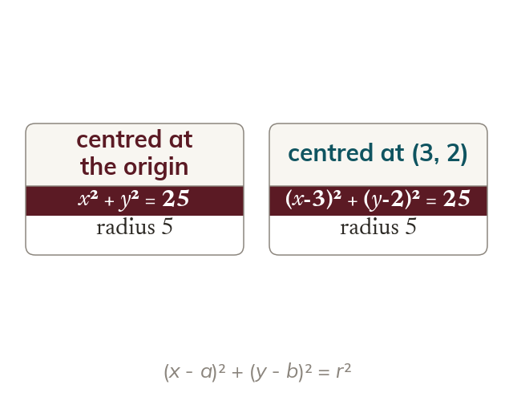

Pythagoras gives the equation
Every point on a circle is a distance r from its centre. For centre (a, b) this gives (x - a)² + (y - b)² = r².
Every point (x, y) on the circle is a distance r from the centre. For centre (a, b) this gives (x - a)² + (y - b)² = r². With the centre at the origin it is x² + y² = r².